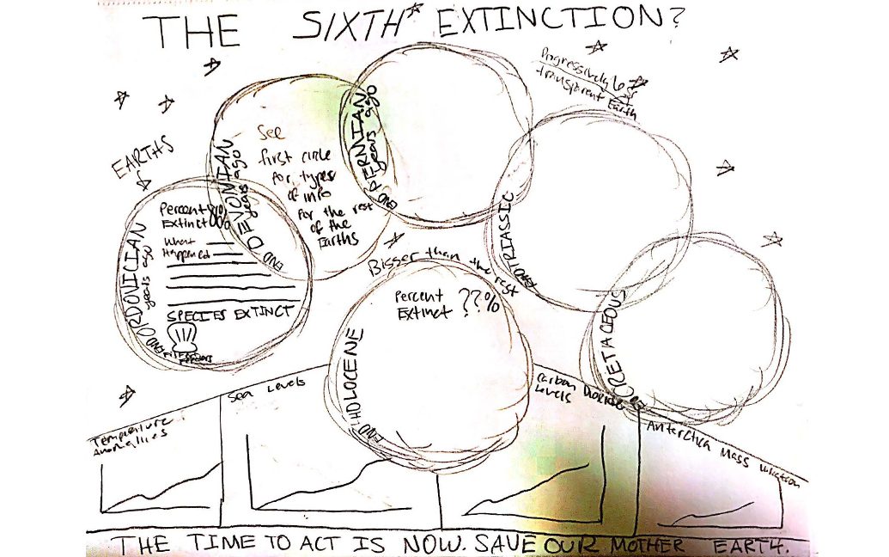

Branding - Information Design - Social Media
Graphics & Video
Since rejoining MORSE Corp in July, I have been honing my graphic design skills through imagining information graphics, presentations, and entire company product line brands.
While a student at Northeastern University, I learned how to leverage a variety of design technologies and foundational principles of typography and design. Check out some of the projects I am proud of below!

OBJEKT Magazine
OBJEKT is an architecture and interior design magazine. An original brand centered around contemporary structures, the layout encapsulates the spirit of the subject through carefully considered type and image.
During the project, I focused on creating a well-paced visual language, which included tracked out headers, rectangular photos, silhouettes, and a consistent type hierarchy.
The images featured provide the viewer with a sense of spaciality that supplements the investigation of the architecture.

Sixth Extinction
This info graphic, based on The Sixth Extinction by Elizabeth Kolbert, relates the Earth's sixth extinction event to the previous five that annihilated life throughout history.
The graphic uses contrast in size and positioning to distinguish the most important mass extinction event, a probable future catastrophe that scientists believe human-caused climate change is leading towards. This concept was made clear after critique of the hand-drawn and digital sketch layout, which did not separate the future event from the previous events successfully.
The final version also encourages the viewer to draw comparisons between current environmental issues and the conditions during the previous extinction events, through iconography representing sea level, global temperature, and carbon dioxide changes.
A major success was the use of opacity blocking (the grid) to group the poster into subtopics in a clean manner. The final version also offered the opportunity to incorporate original illustration in the graphs to bring the data to life.

Intial Sketch
Digital Sketch

NU For Biden Social Media Graphics
During the 2020 election, I was a designer for Northeastern's College Students for Biden chapter.
My focus within the team was designing assets for Instagram that captured the attention of students to encourage them to get involved in the effort.
It was a great chance to practice my layout and masking skills in Photoshop.
Film Making
As a college student, I had the opportunity to experiment with stop motion and narrative film making.
These projects allowed me to approach storytelling through a new medium and learn advanced features in After Effects and Premiere.
The first video is my stop motion which comprises 100's of photos strung together to create the illusion of motion. It deals with how we use memories as a source of comfort in times of struggle.
The final two videos attempt to visualize Lack of Color, a song by Death Cab for Cutie which insists that underlying the mundane and dark parts of life, there is something bright and exciting about existence. The message is conveyed in the first video through type and consistent imagery, while the second employs the juxtaposition of several moments in time.
Our Space Branding
Our Space is a roommate communication app that encourages collaboration to avoid roommate conflict and maintain the shared property.
In exploring logos, I considered imagery such as a house, couch, and (finally) mugs as these made sense for the customer base. Mugs were the optimal choice because it reminded me of sharing, not only coffee, but property, as roommates must do to coexist.
The final logo employs the concept of positive and negative space to provide the illusion of a square-like perimeter reminiscent of the aerial view of a square-shaped room.
Final Brand Presentation

Previous Logo Iterations

Book Design
24 Logotypes and Typefaces is a typographic exploration through the lens of cards. It explores optimal type size to leading ratios, unique letterform combinations, and typographic history. One of my notable challenges with this project was editing the cover images for each new font section to have the same lighting and color pallet in Photoshop.
The second book is a modern redesign of the Tennessee William's A Streetcar Named Desire. My focus was to represent the thoughts and motivations of each character with typography through matching certain styles of font type, size, or color with specific lines in the play.